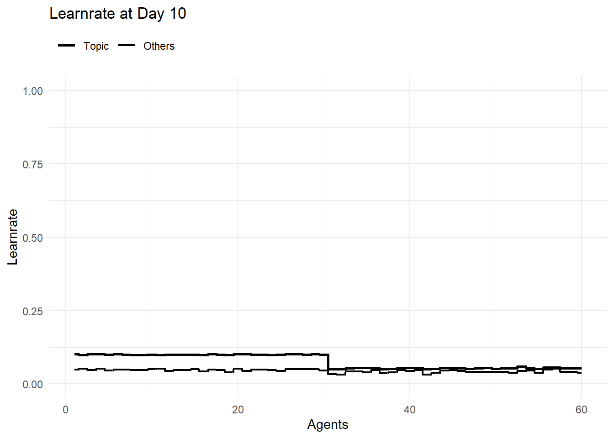

The basic idea is that when two agents meet, they learn together. Later, this should happen in a network. In the beginning, I will let the agents meet randomly in the population to see if the implementation of joint learning works.
If it works as it should, it will be expanded so that a certain percentage of the population meets at the same time.
Now it seems to be time to add other aspects. At first it seems central that different areas of knowledge should be possible.
Definitions
Loading some Packages for easier Data management and Presentation of Results
sort_Pop<-function(Pop=Pop,sort_Par=TRUE,clean_Par=FALSE,sort_Agents=NA){if(sort_Par==TRUE){Pop<-Pop%>%select(tidyselect::all_of(sort_Colnames(Pop =Pop, name ="ID")),tidyselect::all_of(sort_Colnames(Pop =Pop, name ="Agents")),tidyselect::all_of(sort_Colnames(Pop =Pop, name ="Learnrate")),tidyselect::all_of(sort_Colnames(Pop =Pop, name ="Knowledge")),tidyselect::all_of(sort_Colnames(Pop =Pop, name ="Counter")),tidyselect::all_of(sort_Colnames(Pop =Pop, name ="Resources")),everything())}if(clean_Par==TRUE){Pop<-Pop%>%select(tidyselect::all_of(sort_Colnames(Pop =Pop, name ="ID")),tidyselect::all_of(sort_Colnames(Pop =Pop, name ="Agents")),tidyselect::all_of(sort_Colnames(Pop =Pop, name ="Learnrate")),tidyselect::all_of(sort_Colnames(Pop =Pop, name ="Knowledge")),tidyselect::all_of(sort_Colnames(Pop =Pop, name ="Counter")))}if(!is.na(sort_Agents)){Pop<-Pop%>%arrange(across(all_of(sort_Agents)))}return(Pop)}
gen_Pop<-function(addToPop=NULL,nA=NumberOfAgents,ID_Group=ID_Group,K=Knowledge,Typ=SpezKnowledge,pWD=percentsWorkingaDay,pMD=percentsMeetingsaDay){ID<-seq_len(nA)Pop<-tibble(ID =ID, ID_Group =ID_Group)Pop<-update_Typ(Pop =Pop, name ="Agents", Typ =list("p_WorkDay", "p_MeetDay"), add =list(pWD, pMD), set =TRUE)Pop<-update_Typ(Pop =Pop, name ="Knowledge", Typ =Typ, add =K, set =TRUE)if(!is.null(addToPop)){Pop<-Pop%>%mutate(ID =ID+max(addToPop$ID))Typ_add<-get_Typ(Pop =addToPop, name ="Knowledge")Pop<-update_Typ(Pop =Pop, name ="Knowledge", Typ =Typ_add, add =0)addToPop<-update_Typ(Pop =addToPop, name ="Knowledge", Typ =Typ, add =0)Pop<-bind_rows(addToPop,Pop)}Pop<-update_Learnrate(Pop =Pop)Pop<-update_Topic(Pop =Pop)Pop<-sort_Pop(Pop =Pop)return(Pop)}
Code
Pop<-gen_Pop( nA =3, ID_Group ="Zürich", K =list(0.01, 0.2), Typ =list("M1", "M2"), pWD =0.5, pMD =0.8)Pop<-gen_Pop( addToPop =Pop, nA =2, ID_Group ="Bern", K =list(0.01, 0.2), Typ =list("M3", "M1"), pWD =0.2, pMD =0.5)Pop<-gen_Pop( addToPop =Pop, nA =1, ID_Group ="Bern", K =list(0.8), Typ =list("M1"), pWD =0.2, pMD =0.5)Pop<-gen_Pop( addToPop =Pop, nA =1, ID_Group ="Bern", K =list(0.3, 0.3, 0.3), Typ =list("M1", "M2", "M3"), pWD =0.2, pMD =0.5)Pop<-gen_Pop( addToPop =Pop, nA =1, ID_Group ="Bern", K =list(0.0, 0.0, 0.0), Typ =list("M1", "M2", "M3"), pWD =0.2, pMD =0.5)Pop
reset_Counter<-function(Pop=Pop){Pop<-update_Typ(Pop =Pop, name ="Counter", Typ =list("Day", "Time_total","Time_meet","Time_learnd","Number_meet"), add =0, set =TRUE)return(Pop)}
update_Resources
Code
update_Resources<-function(Pop=Pop,time_day=hoursDay,set=TRUE){tmp_Time<-time_day*Pop[["Agents_p_WorkDay"]]tmp_p<-Pop[["Agents_p_MeetDay"]]Pop<-update_Typ(Pop =Pop, name ="Resources", Typ =list("Time_total","Time_meet","Time_learnd"), add =list(tmp_Time,tmp_Time*tmp_p,tmp_Time*(1-tmp_p)), set =set)return(Pop)}
sel_Pairs_rnd<-function(Pop=Pop,psize=percentsOfPop){psize<-min(psize, 1)nR<-nrow(Pop)n<-round(nR*psize*0.4999, 0)n<-max(n, 1)SubPop<-sel_SubPop( Pop =Pop, n =n)Slot1<-SubPop$sel%>%mutate(tmp_ID =seq_len(n))if(nrow(SubPop$rest)==n){Slot2<-SubPop$rest}else{SubPop<-sel_SubPop( Pop =SubPop$rest, n =n)Slot2<-SubPop$sel}Slot2<-Slot2%>%mutate(tmp_ID =seq_len(n))Pairs<-bind_rows(Slot1, Slot2)return(Pairs)}
Timeline<-get_Timeline(TL =Timeline, Pop =Pop)Pop1<-update_Pop(Pop =Pop, name ="Counter_Day", add =1)Timeline<-get_Timeline(TL =Timeline, Pop =Pop1)Timeline
plt_Knowledge_Time<-function(TL=Timeline, TP=NA){if(is.na(TP)){TP<-unique(TL$Counter_Day)}Titel<-paste("Knowledge at Day", TP)Data<-longer_Pop(Pop =TL, name ="Knowledge")%>%filter(Counter_Day==TP)plt<-ggplot(Data, aes(x =ID, y =Knowledge, group =Typ, color =Typ))+geom_step(direction ="mid", linewidth =1)+scale_x_continuous(limits =c(min(Data$ID), max(Data$ID)))+scale_y_continuous(limits =c(0, 1))+ggtitle(Titel)+xlab("Agents")+ylab("Knowledge")+theme_minimal()+theme( legend.title =element_blank(), legend.position ="top", legend.justification ="left")return(plt)}
Simulation
Function
A learning process with updated learn rate by current knowledge when Agents meet randomly by Days
Code
sim_Days<-function(Pop=Pop,nD=nubmberDay,time_day=8,time_meet=0.75){Pop<-update_Learnrate(Pop =Pop)Pop<-update_Topic(Pop =Pop)Pop<-reset_Counter( Pop =Pop)Pop<-update_Resources( Pop =Pop, time_day =time_day)TL<-get_Timeline(TL =TL, Pop =Pop)for(iin1:nD){Pop<-learn_Day(Pop =Pop, time_day =time_day, time_meet =time_meet)Pop<-update_Typ(Pop =Pop, name ="Counter", Typ =list("Day"), add =list(i), set =TRUE)TL<-get_Timeline(TL =TL, Pop =Pop)}Output<-list( Pop =Pop, TL =TL)return(Output)}
Definition & Calculation
Code
Pop<-gen_Pop( nA =30, ID_Group ="Zürich", K =list(0.01), Typ =list("M1"), pWD =0.8, pMD =0.8)Pop<-gen_Pop( addToPop =Pop, nA =30, ID_Group ="Bern", K =list(0.01), Typ =list("M2"), pWD =0.4, pMD =0.8)Pop
plt_Number_meet(TL =res$TL, TP =10, Group ="ID_Group")
Code
plt_Time_invest(TL =res$TL, TP =20, Group ="ID_Group")
Code
plt_Time_invest(TL =res$TL, TP =10)
Code
plt_Learnrate_Timet(TL =res$TL, TP =20, Group ="ID_Group")
Code
plt_Learnrate_Timet(TL =res$TL, TP =10)

Code
plt_Knowledge_Time(TL =res$TL, TP =10)
Special Cases
Only one Agent with Knowledge (0.8)
Code
Pop<-gen_Pop( nA =29, ID_Group ="Zürich", K =list(0.01), Typ =list("M1"), pWD =0.8, pMD =0.8)Pop<-gen_Pop( addToPop =Pop, nA =1, ID_Group ="Zürich", K =list(0.8), Typ =list("M1"), pWD =0.8, pMD =0.8)Pop<-gen_Pop( addToPop =Pop, nA =29, ID_Group ="Bern", K =list(0.01), Typ =list("M2"), pWD =0.4, pMD =0.8)Pop<-gen_Pop( addToPop =Pop, nA =1, ID_Group ="Bern", K =list(0.8), Typ =list("M2"), pWD =0.4, pMD =0.4)Pop<-gen_Pop( addToPop =Pop, nA =30, ID_Group ="Basel", K =list(0.01), Typ =list("M3"), pWD =0.8, pMD =0.4)Pop